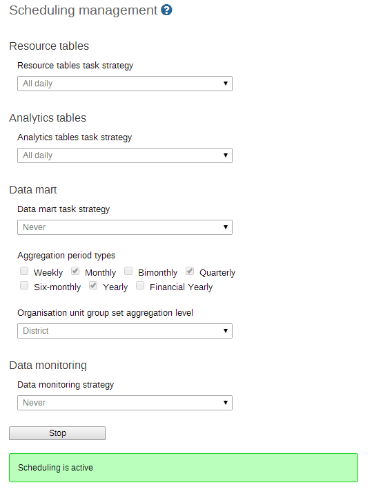

The analytics, resource tables and data mart can be automatically scheduled to run on regular intervals. Simply select the aggregation period types, organisation unit group set aggregation level, and strategy to configure how the scheduled job should run. If you are using surveillance rules, you can choose to run them "All daily" by selecting this option.
Pressing "Start" will enable the scheduled job to run at a pre-determined time (always at midnight based on the server time).
|  |